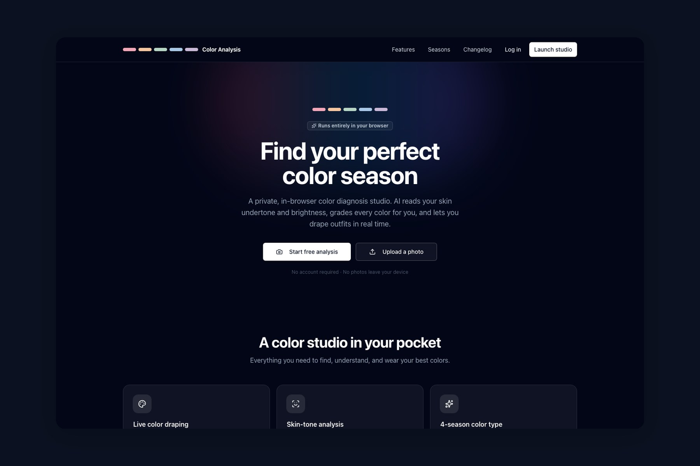

Computer Vision
A browser-based take on personal color analysis: on-device face and color detection that grades every color against your skin tone and places you in a seasonal palette, no appointment required.

Personal color analysis is normally a paid, in-person session: someone holds fabric to your face and you watch your skin either come alive or go grey. The lazy digital version takes a selfie and hands back a verdict, "you are an Autumn," and calls it done. I did not want a verdict. The value is in seeing it on yourself, so the core interaction is live draping: tap a swatch and it recolors your outfit in real time, the same hold-it-up-and-look that makes the real thing work. The season it lands on matters less than letting you feel why.
The camera is the input, reading skin undertone and brightness off a live frame. Privacy was an architecture decision, not a line in a footer: the vision model runs entirely on your device, so nothing you show it ever leaves the browser. For something as personal as your own face, "we don't store it" only means anything if it was never sent in the first place.
It also asks a fair one: how much of a paid, gatekept ritual is really just interaction design and a webcam?